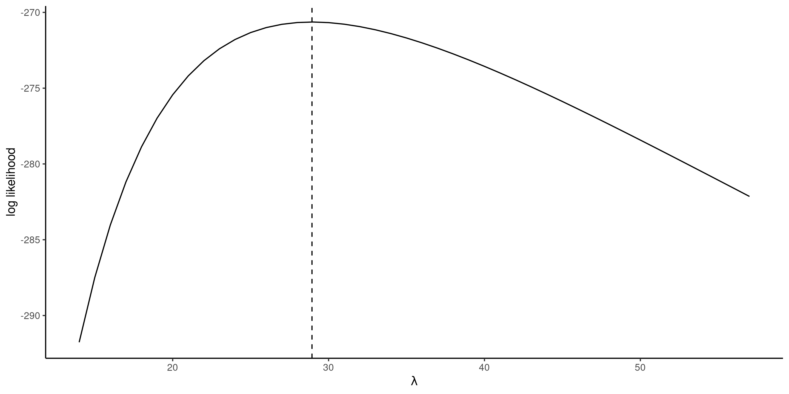

Statistical modelling
02. Likelihood-based inference
2024
Motivating example
The data waiting contain the time in seconds from 17:59 until the next metro train departs from station Université de Montréal on the blue line of the Montreal subway, collected over three months (62 week days). The observations are positive and range from \(4\) to \(57\) seconds.
Figure 1: Histogram of waiting time with rugs for the observations.
Statistical model
Our starting point for a statistical model is a data generating process.
We postulate that the data \(\boldsymbol{y}\) originates from a probability distribution with (unknown) \(p\)-dimensional parameter vector \(\boldsymbol{\theta} \in \boldsymbol{\Theta} \subseteq \mathbb{R}^p\).
Assuming that data are independent, the joint density or mass function factorizes \[\begin{align*} f(\boldsymbol{y}; \boldsymbol{\theta}) = \prod_{i=1}^n f_i(y_i; \boldsymbol{\theta}) = f_1(y_1; \boldsymbol{\theta}) \times \cdots \times f_n(y_n; \boldsymbol{\theta}). \end{align*}\] If data are identically distributed, then all marginal densities are the same, meaning \(f_1(\cdot) = \cdots f_n(\cdot)\).
Exponential model for waiting times
To model the waiting time, we may consider for example an exponential distribution \(Y_i \stackrel{\mathrm{iid}}{\sim}\mathsf{exp}(\lambda)\) with scale \(\lambda>0\), whose density is \[f(x) =\lambda^{-1}\exp(-x/\lambda), \qquad x \ge 0.\] The expected value equals the scale, so \(\mathsf{E}(Y)=\lambda\).
Exponential model density
Under the exponential model, the joint density for the observations \(y_1, \ldots, y_n\) is \[\begin{align*} f(\boldsymbol{y}) = \prod_{i=1}^n f(y_i) =\prod_{i=1}^n \lambda^{-1} \exp(- y_i/\lambda) = \lambda^{-n} \exp\left(- \sum_{i=1}^n y_i/\lambda\right) \end{align*}\] The sample space is \(\mathbb{R}_{+}^n = [0, \infty)^n,\) while the parameter space is \((0, \infty).\)
To estimate the scale parameter \(\lambda\) and obtain suitable uncertainty measures, we need a modelling framework.
Likelihood
Definition 1 (Likelihood) The likelihood \(L(\boldsymbol{\theta})\) is a function of the parameter vector \(\boldsymbol{\theta}\) that gives the probability (or density) of observing a sample under a postulated distribution, treating the observations as fixed, \[\begin{align*} L(\boldsymbol{\theta}; \boldsymbol{y}) = f(\boldsymbol{y}; \boldsymbol{\theta}), \end{align*}\] where \(f(\boldsymbol{y}; \boldsymbol{\theta})\) denotes the joint density or mass function of the \(n\)-vector containing the observations.
In practice, we often work with the log likelihood \(\ell(\boldsymbol{\theta}; \boldsymbol{y}) = \ln L(\boldsymbol{\theta}; \boldsymbol{y})\).
Exponential log likelihood
The log likelihood function for independent and identically distributions observations is \[\begin{align*} \ell(\boldsymbol{\theta}; \boldsymbol{y}) = \sum_{i=1}^n \ln f(y_i; \boldsymbol{\theta}) \end{align*}\] so for the exponential model, \[\begin{align*} \ell(\lambda) = -n \ln\lambda -\frac{1}{\lambda} \sum_{i=1}^n y_i. \end{align*}\]
Maximum likelihood estimator
Definition 2 The maximum likelihood estimator (MLE) \(\widehat{\boldsymbol{\theta}}\) is the vector value that maximizes the likelihood,1 \[\begin{align*} \widehat{\boldsymbol{\theta}} = \mathrm{arg max}_{\boldsymbol{\theta} \in \boldsymbol{\Theta}} L(\boldsymbol{\theta}; \boldsymbol{y}) = \mathrm{arg max}_{\boldsymbol{\theta} \in \boldsymbol{\Theta}} \ell(\boldsymbol{\theta}; \boldsymbol{y}). \end{align*}\]
Intuition behind maximum likelihood
In the discrete setting, the mass function gives the probability of an outcome.
We want to find the parameter values that make the data the most likely to have been generated.
Whatever we observe, we have expected to observe
Deriving the MLE
We can use calculus to find the maximum of the function \(\ell(\lambda)\).
Taking first derivative and setting the result to zero, we find \[\begin{align*} \frac{\mathrm{d} \ell(\lambda)}{\mathrm{d} \lambda} = -\frac{n}{\lambda} + \frac{1}{\lambda^2} \sum_{i=1}^n y_i = 0. \end{align*}\] and solving for \(\lambda\) gives \(\widehat{\lambda} = \sum_{i=1}^n y_i / n.\)
The second derivative of the log likelihood is \(\mathrm{d}^2 \ell(\lambda)/\mathrm{d} \lambda^2 = n(\lambda^{-2} - 2\lambda^{-3}\overline{y}),\) and plugging \(\lambda = \overline{y}\) gives \(-n/\overline{y}^2,\) which is negative. Therefore, \(\widehat{\lambda}\) is indeed a maximizer.
Exponential log likelihood and MLE
Figure 2: Exponential log likelihood function for the waiting time, with the maximum likelihood estimate at dashed vertical line (right).
Invariance of maximum likelihood estimators
If \(g(\boldsymbol{\theta}): \mathbb{R}^p \mapsto \mathbb{R}^k\) for \(k \leq p\) is a function of the parameter vector, then \(g(\widehat{\boldsymbol{\theta}})\) is the maximum likelihood estimator of \(g(\boldsymbol{\theta})\).
For example, we could compute the maximum likelihood estimate of the probability of waiting more than one minute, \(\Pr(T>60) = \exp(-60/\widehat{\lambda})= 0.126,\) or using R built-in distribution function pexp.
Pick whichever parametrization is most convenient for the optimization!
Score vector
The gradient of the log likelihood \[\begin{align*} U(\boldsymbol{\theta}) = \frac{\partial \ell(\boldsymbol{\theta}; \boldsymbol{y})}{\partial \boldsymbol{\theta}} \end{align*}\] is termed score function.
Under regularity conditions (see Chapter 4 of Davison (2003)), the MLE solves the score equation \[\begin{align*} U(\widehat{\boldsymbol{\theta}})=0. \end{align*}\]
Information
How do we measure the precision of our estimator? The observation matrices encode the curvature of the log likelihood and provide information about the variability of \(\widehat{\boldsymbol{\theta}}.\)
The observed information matrix is the hessian of the negative log likelihood \[\begin{align*} j(\boldsymbol{\theta}; \boldsymbol{y})=-\frac{\partial^2 \ell(\boldsymbol{\theta}; \boldsymbol{y})}{\partial \boldsymbol{\theta} \partial \boldsymbol{\theta}^\top}, \end{align*}\] evaluated at the maximum likelihood estimate \(\widehat{\boldsymbol{\theta}},\) so \(j(\widehat{\boldsymbol{\theta}}).\) Under regularity conditions, the expected information, also called Fisher information matrix, is \[\begin{align*} i(\boldsymbol{\theta}) = \mathsf{E}\left\{U(\boldsymbol{\theta}; \boldsymbol{Y}) U(\boldsymbol{\theta}; \boldsymbol{Y})^\top\right\} = \mathsf{E}\left\{j(\boldsymbol{\theta}; \boldsymbol{Y})\right\} \end{align*}\] Both the Fisher (or expected) and the observed information matrices are symmetric.
Observed and expected information matrix for exponential data
The observed and expected information of the exponential model for a random sample \(Y_1, \ldots, Y_n,\) parametrized in terms of scale \(\lambda,\) are \[\begin{align*} j(\lambda; \boldsymbol{y}) &= -\frac{\partial^2 \ell(\lambda)}{\partial \lambda^2} = \frac{n}{\lambda^{2}} + \frac{2}{n\lambda^{3}}\sum_{i=1}^n y_i \\ i(\lambda) &= \frac{n}{\lambda^{2}} + \frac{2}{n\lambda^{3}}\sum_{i=1}^n \mathsf{E}(Y_i) = \frac{n}{\lambda^{2}} \end{align*}\] since \(\mathsf{E}(Y_i) = \lambda\) and expectation is a linear operator. Both expected and observed information matrix coincide when evaluated at the maximum likelihood estimator, \(i(\widehat{\lambda}) = j(\widehat{\lambda}) = n/\overline{y}^2\) for \(\widehat{\lambda}=\overline{y}\) (i.e., the sample mean), but this isn’t the case in general.
Maximization of the likelihood
- To obtain the maximum likelihood estimator, we will typically find the value of the vector \(\boldsymbol{\theta}\) that solves the score vector, meaning \(U(\widehat{\boldsymbol{\theta}})=\boldsymbol{0}_p.\)
- This amounts to solving simultaneously a \(p\)-system of equations by setting the derivative with respect to each element of \(\boldsymbol{\theta}\) to zero.
- If \(j(\widehat{\boldsymbol{\theta}})\) is a positive definite matrix (i.e., all of it’s eigenvalues are positive), then the vector \(\widehat{\boldsymbol{\theta}}\) is the maximum likelihood estimator.
Gradient-based optimization (Newton–Raphson algorithm)
If we consider an initial value \(\boldsymbol{\theta}^{\dagger},\) then under suitable regularity conditions, a first order Taylor series expansion of the score in a neighborhood \(\boldsymbol{\theta}^{\dagger}\) of the MLE \(\widehat{\boldsymbol{\theta}}\) gives \[\begin{align*} \boldsymbol{0}_p & = U(\widehat{\boldsymbol{\theta}}) \stackrel{\cdot}{\simeq} \left. \frac{\partial \ell(\boldsymbol{\theta})}{\partial \boldsymbol{\theta}} \right|_{\boldsymbol{\theta} = \boldsymbol{\theta}^{\dagger}} + \left. \frac{\partial^2 \ell(\boldsymbol{\theta})}{\partial \boldsymbol{\theta} \partial \boldsymbol{\theta}^\top}\right|_{\boldsymbol{\theta} = \boldsymbol{\theta}^{\dagger}}(\widehat{\boldsymbol{\theta}} - \boldsymbol{\theta}^{\dagger})\\&=U(\boldsymbol{\theta}^{\dagger}) - j(\boldsymbol{\theta}^{\dagger})(\widehat{\boldsymbol{\theta}} - \boldsymbol{\theta}^{\dagger}) \end{align*}\] and solving this for \(\widehat{\boldsymbol{\theta}}\) (provided the \(p \times p\) matrix \(j(\widehat{\boldsymbol{\theta}})\) is invertible), we get \[\begin{align*} \widehat{\boldsymbol{\theta}} \stackrel{\cdot}{\simeq} \boldsymbol{\theta}^{\dagger} + j^{-1}(\boldsymbol{\theta}^{\dagger})U(\boldsymbol{\theta}^{\dagger}), \end{align*}\] which suggests an iterative procedure from a starting value \(\boldsymbol{\theta}^{\dagger}\) in the vicinity of the mode until the gradient is approximately zero.
Weibull distribution
The distribution function of a Weibull random variable with scale \(\lambda>0\) and shape \(\alpha>0\) is \[\begin{align*} F(x; \lambda, \alpha) &= 1 - \exp\left\{-(x/\lambda)^\alpha\right\}, \qquad x \geq 0, \lambda>0, \alpha>0, \end{align*}\] while the corresponding density is \[\begin{align*} f(x; \lambda, \alpha) &= \frac{\alpha}{\lambda^\alpha} x^{\alpha-1}\exp\left\{-(x/\lambda)^\alpha\right\}, \qquad x \geq 0, \lambda>0, \alpha>0. \end{align*}\] The Weibull distribution includes the exponential as special case when \(\alpha=1.\) The expected value of \(Y \sim \mathsf{Weibull}(\lambda, \alpha)\) is \(\mathsf{E}(Y) = \lambda \Gamma(1+1/\alpha).\)
Maximum likelihood of a Weibull sample
The log likelihood for the \(\mathsf{Weibull}(\lambda, \alpha)\) model is \[\begin{align*} \ell(\lambda, \alpha) = n \ln(\alpha) - n\alpha\ln(\lambda) + (\alpha-1) \sum_{i=1}^n \ln y_i - \lambda^{-\alpha}\sum_{i=1}^n y_i^\alpha. \end{align*}\] The gradient of this function is easily obtained by differentiation \[\begin{align*} \frac{\partial \ell(\lambda, \alpha)}{\partial \lambda} &= -\frac{n\alpha}{\lambda} +\alpha\lambda^{-\alpha-1}\sum_{i=1}^n y_i^\alpha \\ \frac{\partial \ell(\lambda, \alpha)}{\partial \alpha} &= \frac{n}{\alpha} - n \ln(\lambda) + \sum_{i=1}^n \ln y_i - \sum_{i=1}^n \left(\frac{y_i}{\lambda}\right)^{\alpha} \times\ln\left(\frac{y_i}{\lambda}\right). \end{align*}\]
R demo
Numerical optimization to obtain the maximum likelihood estimate of the Weibull distribution (no closed-form expression for the MLE).
Quantile quantile plot
A quantile-quantile plot shows
- on the \(x\)-axis, the theoretical quantiles \(\widehat{F}^{-1}\{i/(n+1)\}\), where \(\widehat{F}^{-1}\) denotes the quantile function of the estimated model
- on the \(y\)-axis, the ordered empirical quantiles \(y_{(1)} \leq \cdots y_{(n)}\)
If the model is adequate, the ordered values should follow a straight line with unit slope passing through the origin.
Optimization routines
The MASS package includes some wrappers to estimate models
# Estimate parameters via optimization routine
fit_weibull <- MASS::fitdistr(x = waiting, densfun = "weibull")
# Extract parameters
fit_weibull$estimate
## shape scale
## 2.6 32.6
# Compute positions for QQ plot
n <- length(waiting) # sample size
xpos <- qweibull( # quantile function
p = ppoints(n), # pseudo uniform variables
shape = fit_weibull$estimate['shape'],
scale = fit_weibull$estimate['scale'])
ypos <- sort(waiting)
#plot(x = xpos, y = ypos, panel.first = {abline(a = 0, b = 1)})Goodness-of-fit checks
Figure 3: Quantile-quantile plots for exponential (left) and Weibull (right) models, with 95% pointwise simulation intervals.
Sampling distribution
The sampling distribution of an estimator \(\widehat{\boldsymbol{\theta}}\) is the probability distribution induced by the underlying data (recall that the data inputs are random, so the output is random too).
Denote the true value of the parameter vector \(\boldsymbol{\theta}_0.\) Under suitable regularity conditions, an application of the central limit gives \[\begin{align*} i(\boldsymbol{\theta}_0)^{-1/2}U(\boldsymbol{\theta}_0) \stackrel{\cdot}{\sim}\mathsf{normal}_p(\boldsymbol{0}_p, \mathsf{I}_p). \end{align*}\]
Similar approximations for the sampling distribution of \(\widehat{\boldsymbol{\theta}}\) show that \[\begin{align*} \widehat{\boldsymbol{\theta}} \stackrel{\cdot}{\sim} \mathsf{normal}_p\{\boldsymbol{\theta}_0, i^{-1}(\boldsymbol{\theta})\} \end{align*}\] where the covariance matrix is the inverse of the Fisher information.1
Covariance matrix and standard errors for the Weibull distribution
We can use these results for statistical inference! The standard errors are simply the square root of the diagonal entries of the inverse Hessian matrix, \(\mathrm{se}(\widehat{\boldsymbol{\theta}})=[\mathrm{diag}\{j^{-1}(\widehat{\boldsymbol{\theta}})\}]^{1/2}\).
# 'opt_weibull' is the result of the optimization routine
# which minimizes the negative of the log likelihood
# The Hessian matrix of the negative log likelihood
# is evaluated at the MLE (observed information)
(mle_weibull <- opt_weibull$par)
## [1] 32.6 2.6
(obsinfo_weibull <- opt_weibull$hessian)
## [,1] [,2]
## [1,] 0.396 -0.818
## [2,] -0.818 16.998
# Covariance matrix is inverse of information
(vmat_weibull <- solve(obsinfo_weibull))
## [,1] [,2]
## [1,] 2.804 0.1349
## [2,] 0.135 0.0653
# Standard errors
(se_weibull <- sqrt(diag(vmat_weibull)))
## [1] 1.675 0.256Wald-based confidence intervals
From these, one can readily \((1-\alpha)\) Wald-based confidence intervals for parameters from \(\boldsymbol{\theta}\), where for \(\theta_j\) \((j=1, \ldots, p)\), \[\begin{align*} \widehat{\theta}_j \pm \mathfrak{z}_{1-\alpha/2}\mathrm{se}(\widehat{\theta}_j), \end{align*}\] where \(\mathfrak{z}_{1-\alpha/2}\) is the \(1-\alpha/2\) quantile of the standard normal distribution.
These confidence intervals are symmetric.
Delta-method and transformations
The asymptotic normality result can be used to derive standard errors for other quantities of interest.
If \(\phi = g(\boldsymbol{\theta})\), where \(g: \mathbb{R}^p \to \mathbb{R}^k\) for \(k \leq p\) is a differentiable function of \(\boldsymbol{\theta}\) non-vanishing at \(\boldsymbol{\theta}_0\) then \[\widehat{\phi} \stackrel{\cdot}{\sim}\mathsf{normal}(\phi_0, \nabla \phi^\top i(\boldsymbol{\theta}_0)^{-1} \nabla \phi),\] where \[\nabla \phi=[\partial \phi/\partial \theta_1, \ldots, \partial \phi/\partial \theta_p]^\top.\]
The variance matrix and the jacobian are evaluated at the maximum likelihood estimate \(\widehat{\boldsymbol{\theta}}.\)
Probability of waiting for exponential model.
Consider the probability of waiting more than one minute, \(\phi=g(\lambda) = \exp(-60/\lambda).\) The maximum likelihood estimate is, by invariance, \(0.126\) and the gradient of \(g\) with respect to the scale parameter is \(\nabla \phi = \partial \phi / \partial \lambda = 60\exp(-60/\lambda)/\lambda^2.\)
lambda_hat <- mean(waiting)
phi_hat <- exp(-60/lambda_hat)
# Derivative of phi wrt lambda
dphi <- function(lambda){60*exp(-60/lambda)/(lambda^2)}
# Inverse of observed information
V_lambda <- lambda_hat^2/length(waiting)
# Variance of phi
V_phi <- dphi(lambda_hat)^2 * V_lambda
# Standard error of phi
(se_phi <- sqrt(V_phi))
## [1] 0.0331Comparison of nested models
We consider a null hypothesis \(\mathscr{H}_0\) that imposes restrictions on the possible values of \(\boldsymbol{\theta}\) can take, relative to an unconstrained alternative \(\mathscr{H}_a.\)
There are two nested models: a full model (alternative), and a reduced or null model that is a subset of the full model where we impose \(q\) restrictions on the parameters.
For example, the exponential distribution is a special case of the Weibull distribution if \(\alpha=1\).
Likelihood tests
Recall that the null hypothesis \(\mathscr{H}_0\) tested is “the reduced model is an adequate simplification of the full model”.
The likelihood provides three main classes of statistics for testing this hypothesis, namely
- likelihood ratio tests statistics, denoted \(R,\) which measure the drop in log likelihood (vertical distance) from \(\ell(\widehat{\boldsymbol{\theta}})\) and \(\ell(\widehat{\boldsymbol{\theta}}_0).\)
- Wald tests statistics, denoted \(W,\) which consider the standardized horizontal distance between \(\widehat{\boldsymbol{\theta}}\) and \(\widehat{\boldsymbol{\theta}}_0.\)
- score tests statistics, denoted \(S,\) which looks at the scaled slope of \(\ell,\) evaluated only at \(\widehat{\boldsymbol{\theta}}_0\) (derivative of \(\ell\)).
where \(\widehat{\boldsymbol{\theta}}_0\) is the MLE with the constraints under the null, and \(\widehat{\boldsymbol{\theta}}\) the MLE of the full model.
Visualizing likelihood tests

Figure 4: Log-likelihood curve and the three likelihood-based tests, namely Wald, likelihood ratio and score tests.
Likelihood-based test statistics
The three main classes of statistics for testing a simple null hypothesis \(\mathscr{H}_0: \boldsymbol{\theta}=\boldsymbol{\theta}_0\) against the alternative \(\mathscr{H}_a: \boldsymbol{\theta} \neq \boldsymbol{\theta}_0\) are1 \[\begin{align*} W(\boldsymbol{\theta}_0) &= (\widehat{\boldsymbol{\theta}}-\boldsymbol{\theta}_0)^\top j(\widehat{\boldsymbol{\theta}})(\widehat{\boldsymbol{\theta}}-\boldsymbol{\theta}_0), &&(\text{Wald}) \\ R(\boldsymbol{\theta}_0) &= 2 \left\{ \ell(\widehat{\boldsymbol{\theta}})-\ell(\boldsymbol{\theta}_0)\right\}, &&(\text{likelihood ratio})\\ S(\boldsymbol{\theta}_0) &= U^\top(\boldsymbol{\theta}_0)i^{-1}(\boldsymbol{\theta}_0)U(\boldsymbol{\theta}_0). && (\text{score}) \end{align*}\] If \(\mathscr{H}_0\) is true, the three test statistics follow asymptotically a \(\chi^2_q\) distribution under a null hypothesis \(\mathscr{H}_0,\) where the degrees of freedom \(q\) are the number of restrictions.
Unidimensional version of likelihood statistics
For scalar \(\theta\) with \(q=1,\) signed versions of these statistics exist, \[\begin{align*} w(\theta_0)&=(\widehat{\theta}-\theta_0)/\mathsf{se}(\widehat{\theta}) &&(\text{wald test}) \\ r({\theta_0}) &= \mathrm{sign}(\widehat{\theta}-\theta)\left[2 \left\{\ell(\widehat{\theta})-\ell(\theta)\right\}\right]^{1/2} &&(\text{directed likelihood root}) \\ s(\theta_0)&=i^{-1/2}(\theta_0)U(\theta_0) &&(\text{score test}) \end{align*}\]
If the null hypothesis \(\mathscr{H}_0: \theta = \theta_0\) holds true, then \(w(\theta_0)\stackrel{\cdot}{\sim} \mathsf{normal}(0,1)\), etc.
Comparisons of tests
Asymptotically, all the test statistics are equivalent (in the sense that they lead to the same conclusions about \(\mathscr{H}_0\)) but they are not born equal.
- The likelihood ratio test statistic is normally the most powerful of the three tests (preferable).
- The likelihood ratio test is invariant to interest-preserving reparametrizations
- The score statistic \(S\) only requires calculation of the score and information under \(\mathscr{H}_0\) (because by definition \(U(\widehat{\theta})=0\)), so it can be useful in problems where calculations of the maximum likelihood estimator under the alternative is costly or impossible.
- The Wald test is easiest to derive, but it’s coverage can be dismal if the sampling distribution of \(\widehat{\boldsymbol{\theta}}\) is strongly asymmetric.
Likelihood surface and confidence regions
Figure 5: Log likelihood surface for the Weibull model with 10%, 20%, , 90% likelihood ratio confidence regions (white contour curves). Higher log likelihood values are indicated by darker colors.
Wald test to compare exponential vs Weibull model
We can test whether the exponential model is an adequate simplification of the Weibull distribution by imposing the restriction \(\mathscr{H}_0: \alpha=1\). We compare the squared Wald statistics to a \(\chi^2_1\).
# Calculate Wald statistic
wald_exp <- (mle_weibull[2] - 1)/se_weibull[2]
# Compute p-value
pchisq(wald_exp^2, df = 1, lower.tail = FALSE)
## [1] 3.61e-10
# p-value less than 5%, reject null
# Obtain 95% confidence intervals
mle_weibull[2] + qnorm(c(0.025, 0.975))*se_weibull[2]
## [1] 2.1 3.1
# 1 is not inside the confidence interval, reject nullWe reject the null hypothesis, meaning the exponential submodel is not an adequate simplification of the Weibull \((\alpha \neq 1\)).
Likelihood tests for scalar parameters
- Sometimes, we may want to perform hypothesis test or derive confidence intervals for selected components of the model if we are interested in a single component of the model (or a scalar transformation \(\phi = g(\boldsymbol{\theta})\).
- In this case, the null hypothesis only restricts part of the space and the other parameters, termed nuisance, are left unspecified — the question then is what values to use for comparison with the full model.
- It turns out that the values that maximize the constrained log likelihood are what one should use for the test, and the particular function in which these nuisance parameters are integrated out is termed a profile likelihood.
Profile likelihood
Consider a parametric model with log likelihood function \(\ell(\boldsymbol{\theta})\) whose \(p\)-dimensional parameter vector \(\boldsymbol{\theta}=(\boldsymbol{\psi}, \boldsymbol{\varphi})\) can be decomposed into a \(q\)-dimensional parameter of interest \(\boldsymbol{\psi}\) and a \((p-q)\)-dimensional nuisance vector \(\boldsymbol{\varphi}.\)
We can consider the profile likelihood \(\ell_{\mathsf{p}},\) a function of \(\boldsymbol{\psi}\) alone, which is obtained by maximizing the likelihood pointwise at each fixed value \(\boldsymbol{\psi}_0\) over the nuisance vector \(\boldsymbol{\varphi}_{\psi_0},\) \[\begin{align*} \ell_{\mathsf{p}}(\boldsymbol{\psi})=\max_{\boldsymbol{\varphi}}\ell(\boldsymbol{\psi}, \boldsymbol{\varphi})=\ell(\boldsymbol{\psi}, \widehat{\boldsymbol{\varphi}}_{\boldsymbol{\psi}}). \end{align*}\]
Profile likelihood for shape of a Weibull model
Consider the shape parameter \(\psi \equiv\alpha\) as parameter of interest, and the scale \(\varphi\equiv\lambda\) as nuisance parameter. Using the gradient, \[\begin{align*} \frac{\partial \ell(\lambda, \alpha)}{\partial \lambda} &= -\frac{n\alpha}{\lambda} +\alpha\lambda^{-\alpha-1}\sum_{i=1}^n y_i^\alpha \\ \end{align*}\] we find that the value of the scale that maximizes the log likelihood for given \(\alpha\) is \[\begin{align*} \widehat{\lambda}_\alpha = \left( \frac{1}{n}\sum_{i=1}^n y_i^\alpha\right)^{1/\alpha}. \end{align*}\] and plugging in this value gives a function of \(\alpha\) alone, thereby also reducing the optimization problem for the Weibull to a line search along \(\ell_{\mathsf{p}}(\alpha)\).
Profile for the shape
Figure 6: Profile log likelihood for \(\alpha\), shown as a dashed gray line (left) and as a transect (right). The profile on the right hand panel has been shifted vertically to be zero at the MLE; the dashed horizontal lines denote the cutoff points for the 95% and 99% confidence intervals.
Analogy for the profile log likelihood
- If one thinks of these contours lines as those of a topographic map, the profile likelihood corresponds in this case to walking along the ridge of both mountains along the \(\psi\) direction, with the right panel showing the elevation gain/loss.
- The corresponding elevation profile on the right of Figure 6 with cutoff values.
- We would need to obtain numerically using a root finding algorithm the limits of the confidence interval on either side of \(\widehat{\alpha}\), but it’s clear that \(\alpha=1\) is not inside even the 99% confidence interval.
Profile log likelihood for the Weibull expected value
- As an alternative, we can use numerical optimization to compute the profile for another function. Suppose we are interested in the expected waiting time, which according to the model is \(\mu = \mathsf{E}(Y) = \lambda\Gamma(1+1/\alpha)\).
- To this effect, we reparametrize the model in terms of \((\mu, \alpha)\), where \(\lambda=\mu/\Gamma(1+1/\alpha)\).
- We then make a wrapper function that optimizes the log likelihood for fixed value of \(\mu\), then returns \(\widehat{\alpha}_{\mu}\), \(\mu\) and \(\ell_{\mathrm{p}}(\mu)\).
R demo
Create a function to compute the profile-based confidence intervals.
Computation of confidence intervals
To get the confidence intervals for a scalar parameter, there is a trick that helps with the derivation.
- Compute the directed likelihood root \[r(\psi) = \mathrm{sign}(\psi - \widehat{\psi})\{2\ell_{\mathrm{p}}(\widehat{\psi}) -2 \ell_{\mathrm{p}}(\psi)\}^{1/2}\] over a fine grid of \(\psi\)
- Fit a smoothing spline with response \(y=\psi\) and explanatory \(x=r(\psi)\).
- Predict the curve at the standard normal quantiles \(\mathfrak{z}_{\alpha/2}\) and \(\mathfrak{z}_{1-\alpha/2}\)
- Return these values as confidence interval.
Profile for the mean of the Weibull
Figure 7: Signed likelihood root (left) and shifted profile log likelihood (right) as a function of the expected value \(\mu\) in the Weibull model.
Comparison of models
- The likelihood can also serve as building block for model comparison: the larger \(\ell(\boldsymbol{\widehat{\theta}})\), the better the fit.
- However, the likelihood doesn’t account for model complexity in the sense that more complex models with more parameters lead to higher likelihood.
- This is not a problem for comparison of nested models using the likelihood ratio test because we look only at relative improvement in fit.
- There is a danger of overfitting if we only consider the likelihood of a model.
Information criteria
Information criteria combine the log likelihood, measuring how well the model fits the data, with a penalty for the number of parameters. \[\begin{align*} \mathsf{AIC}&=-2\ell(\widehat{\boldsymbol{\theta}})+2p \\ \mathsf{BIC}&=-2\ell(\widehat{\boldsymbol{\theta}})+p\ln(n), \end{align*}\] where \(p\) is the number of parameters in the model.
The smaller the value of Akaike’s information criterion \(\mathsf{AIC}\) (or of the Bayesian information criterion \(\mathsf{BIC}\)), the better the model fit.
Note that information criteria do not constitute formal hypothesis tests on the parameters, but they can be used to compare models that are not nested (but noisy proxy!)
Learning objectives
Learning objectives
- Learn the terminology associated with likelihood-based inference
- Derive closed-form expressions for the maximum likelihood estimator in simple models
- Using numerical optimization, obtain parameter estimates and their standards errors using maximum likelihood
- Use large-sample properties of the likelihood to derive confidence intervals and tests
- Use information criteria for model selection
References